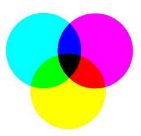
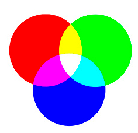
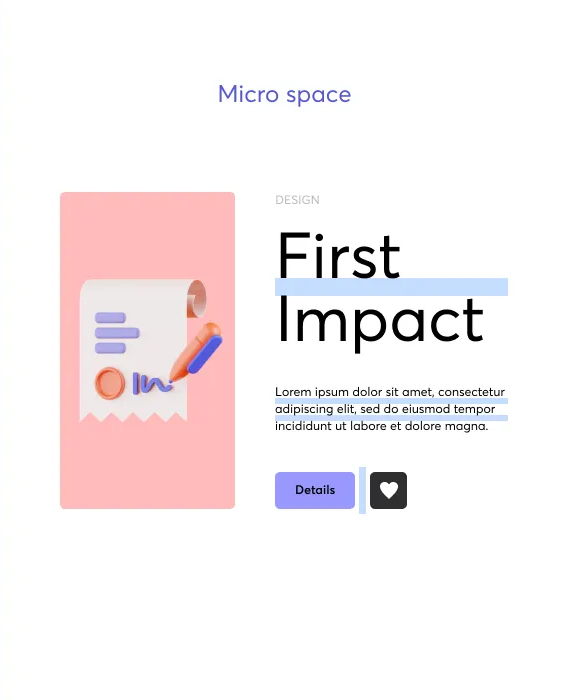
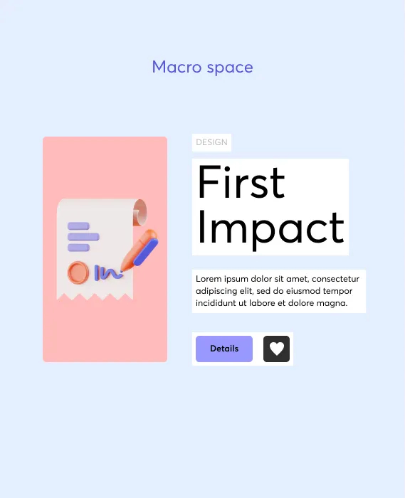

Temas Abordados
Design de interfaces
Introdução aos princípios fundamentais do design de interfaces, abordando o equilíbrio entre estética e funcionalidade, os principais conceitos de usabilidade e os desafios do design para web e mobile.
Composição visual
Introdução aos princípios da composição visual aplicados ao design de interfaces, explorando alinhamento, equilíbrio, contraste, hierarquia visual, uso de grids e cores
Formatos de imagem
Introdução aos formatos de imagem digitais aplicados ao design de interfaces, explorando diferenças entre raster e vetorial, modelos de cores RGB e CMYK, técnicas de compressão e recomendações práticas para web e impressão.
Espaços negativos
Aborda o uso do espaço negativo e do design minimalista como ferramentas essenciais para melhorar a legibilidade, criar foco visual e tornar as interfaces mais intuitivas e equilibradas.
Tendências visuais
Explora as principais tendências visuais em design de interfaces, analisando como aplicá-las de forma estratégica sem comprometer a usabilidade, a performance e a consistência visual.
Acessibilidade digital
Apresenta os fundamentos da acessibilidade digital e das WCAG 2.1, destacando a importância do design inclusivo para garantir igualdade de acesso e uma melhor experiência para todos os utilizadores.
Princípios de Design de Interfaces
O design de interfaces tem como objetivo o equilíbrio entre estética e funcionalidade, garantindo que a interface seja visualmente apelativa e, ao mesmo tempo, fácil de utilizar. Uma interface bem projetada permite que o utilizador interaja com o sistema de forma intuitiva, sem dificuldades ou confusão.
Existem diversos princípios no que toca ao design de interfaces, que devem ser considerados durante o processo de desenvolvimento, especialmente em projetos para web e dispositivos móveis.

Princípios Fundamentais do Design de Interfaces
Entre os principais princípios do design de interfaces destacam-se a utilização correta das cores, o espaçamento e o layout, a acessibilidade, o estudo da audiência, a usabilidade, a tipografia, o design responsivo, a consistência e o feedback visual.
O uso de cores deve ser atrativo e representar a identidade da marca, tendo em conta a psicologia das cores. As cores ajudam a comunicar informação, criar contraste e orientar o utilizador durante a navegação.
O espaçamento e o layout são essenciais para evitar a desordem visual. Um espaçamento adequado entre elementos melhora a legibilidade e facilita a compreensão da informação apresentada na interface.
A tipografia deve ser legível e apropriada para o contexto, sendo importante variar o tamanho da fonte para indicar hierarquia visual e diferenciar títulos, subtítulos e texto principal.
Acessibilidade e Estudo da Audiência
A acessibilidade é um dos princípios mais importantes do design de interfaces. A interface deve ser projetada a pensar na inclusão de todos os utilizadores, garantindo que pessoas com deficiências visuais, motoras ou cognitivas consigam utilizar o sistema.
O estudo da audiência permite compreender quem são os utilizadores e adaptar o design às suas necessidades. Interfaces criadas sem considerar o público-alvo tendem a apresentar problemas de usabilidade.
Estética e Funcionalidade
A estética está relacionada com o aspeto visual da interface, incluindo tipografia, cores, ícones, espaçamento e layout. Estes elementos são importantes para captar a atenção do utilizador e criar uma experiência visual agradável.
A funcionalidade está associada à navegação, usabilidade e desempenho. Uma navegação simples e fluída ajuda o utilizador a encontrar rapidamente o que precisa, enquanto o desempenho influencia diretamente a experiência de utilização.
Um produto com funcionalidade mas sem estética não é cativante, tal como um produto com estética mas sem funcionalidade não é útil. Manter o equilíbrio entre estes dois conceitos é fundamental para o sucesso de um produto digital.

Design para Web e Mobile
O design para web e mobile apresenta desafios e oportunidades. É necessário garantir consistência entre plataformas, adaptar componentes visuais a diferentes tamanhos de ecrã e manter uma boa performance e velocidade de carregamento.
Interfaces devem ser pensadas para evoluir ao longo do tempo, recorrendo a componentes reutilizáveis e sistemas de design que facilitem a manutenção e a escalabilidade do projeto.
Princípios de Composição Visual
O processo de composição visual é onde se planeia, ordena e organiza os elementos visuais de um plano. No design de interfaces, este processo é essencial para garantir que a informação é apresentada de forma clara, lógica e visualmente apelativa.
Desenvolver um olhar crítico permite ao designer compreender quais decisões fortalecem um projeto e quais podem prejudicar a mensagem que se pretende transmitir ao utilizador.
Alinhamento
O alinhamento é um dos princípios mais importantes da composição visual, pois garante uma aparência nítida e organizada. Um design bem alinhado assegura que os elementos possuem uma ligação visual entre si, criando uma estrutura harmoniosa.
Ao alinhar corretamente textos, imagens e botões, seja à esquerda, à direita, ao centro ou justificado, melhora-se a legibilidade, orienta-se o olhar do utilizador e transmite-se profissionalismo.
Texto alinhado à esquerda!
Texto alinhado ao centro!
Texto alinhado à direita!
Equilíbrio
O equilíbrio garante estabilidade visual a uma composição, sem que seja necessário que todos os elementos tenham a mesma dimensão ou peso. O objetivo é facilitar a perceção do conteúdo e promover uma leitura fluida.
O equilíbrio simétrico distribui os elementos de forma uniforme, enquanto o equilíbrio assimétrico utiliza o contraste para criar harmonia e dinamismo visual.
Contraste
O contraste é um princípio fundamental da composição visual, pois ajuda a destacar os elementos mais importantes da interface. Este efeito ocorre quando dois elementos se opõem, como claro e escuro, grande e pequeno ou moderno e tradicional.
Um contraste bem aplicado direciona a atenção do utilizador para áreas relevantes do design, facilitando a compreensão da informação.
Bom Contraste
Texto escuro sobre fundo claro
Mau Contraste
Texto claro sobre fundo claro
Uso de Grids e Malhas
Os grids são uma ferramenta essencial no design de interfaces, funcionando como uma estrutura que divide o layout em colunas, margens e espaços de separação.
Este sistema promove organização, consistência visual e facilita a adaptação do layout a diferentes resoluções e dispositivos, contribuindo também para a acessibilidade.
Hierarquia Visual
A hierarquia visual desempenha um papel fundamental no design de interfaces, pois orienta o utilizador sobre onde olhar primeiro e qual o próximo passo a tomar.
Uma hierarquia bem construída melhora a experiência do utilizador, aumenta o envolvimento e reduz a frustração ao navegar numa interface. Elementos como contraste, espaço nulo, tipografia e padronização ajudam a criar uma hierarquia clara e eficaz.
Formatos de Imagem no Design de Interfaces
No design de interfaces, a escolha do formato de imagem é um fator determinante para garantir qualidade visual, desempenho e compatibilidade. Cada formato possui características próprias que influenciam a forma como a imagem é armazenada, exibida e processada.
Compreender as diferenças entre imagens raster e vetoriais, bem como os modelos de cor e os métodos de compressão, permite ao designer tomar decisões adequadas consoante o contexto de utilização.
Imagens Raster
As imagens raster são compostas por píxeis organizados numa grelha. Cada píxel contém informação de cor, o que permite representar imagens com grande detalhe, como fotografias.
No entanto, ao aumentar a dimensão de uma imagem raster, ocorre perda de qualidade e pixelização. Formatos como JPEG, PNG e WebP pertencem a esta categoria e são amplamente utilizados na web.

Imagens Vetoriais
As imagens vetoriais são construídas através de fórmulas matemáticas que definem linhas, curvas e formas geométricas. Esta característica permite redimensionar a imagem sem perda de qualidade.
O formato SVG é o mais utilizado em design de interfaces, especialmente para logótipos, ícones e elementos gráficos que necessitam de adaptação a diferentes resoluções.
Modelos de Cor
A escolha entre RGB e CMYK pode ser díficil, por isso, há que saber as diferenças entre cada modelo. RGB oferece uma gama de cores muito superior, com cores vibrantes e saturadas ideais para ecrãs. CMYK, limitado a quatro cores de tinta, não consegue reproduzir a mesma intensidade cromática. A conversão entre os dois modelos pode resultar em perda significativa de cor, especialmente em tons azuis e verdes.
O modelo de cor RGB é utilizado em dispositivos digitais, combinando vermelho, verde e azul para formar diferentes cores. Este modelo é aditivo, o que significa que a combinação total das cores resulta em branco. Já o modelo CMYK é utilizado principalmente para impressão, baseando-se na combinação de ciano, magenta, amarelo e preto. Este modelo é subtrativo, pois a mistura das cores tende para o preto.
CMYK
RGB
Compressão de Imagens
A compressão de imagens é a técnica de reduzir tamanho de ficheiros mantendo uma qualidade aceitável. Dois métodos coexistem: compressão com perdas, elimina dados considerados irrelevantes para a visão humana, enquanto compressão sem perdas utiliza algoritmos que permitem reconstrução exacta. A escolha depende do equilíbrio desejado entre tamanho e fidelidade visual
A compressão com perdas revolucionou a distribuição de imagens na web. Remove dados que o olho humano dificilmente percebe, o que permite reduções de até 90% no tamanho de ficheiro. No entanto, esta abordagem agressiva deixa artefatos visíveis em compressões muito elevadas: blocos quadrados, halos ao redor de bordas, e suavização excessiva de detalhes.
Recomendações para Web
Na web, é essencial equilibrar qualidade visual e desempenho. Fotografias devem ser guardadas em formatos otimizados como JPEG ou WebP, enquanto ícones e gráficos simples devem utilizar SVG.
A seleção do formato correto é determinante para sucesso de qualquer projeto visual. Cada contexto (web, impressão, animação) exige abordagem específica. Fotógrafos profissionais, designers gráficos e desenvolvedores web devem dominar estas recomendações para otimizar fluxos de trabalho e resultados finais.

Espaços Negativos e Minimalismo
O espaço negativo refere-se às áreas vazias entre elementos de design. No contexto do design de interfaces, corresponde ao espaço em branco ou vazio em torno de texto, imagens, botões e outros componentes visuais.
O uso eficaz de espaços negativos permite destacar elementos importantes, tornando a informação mais fácil de compreender através do contraste e da organização visual. Não se trata de espaço desperdiçado, mas sim de uma ferramenta estratégica para melhorar legibilidade, foco e hierarquia.
Micro Espaço e Macro Espaço
O espaço negativo pode ser dividido em dois tipos principais:
O micro espaço inclui o espaçamento entre letras, linhas de texto e parágrafos. É essencial para garantir legibilidade e conforto na leitura.
O macro espaço corresponde às margens e áreas vazias entre blocos de conteúdo e secções maiores da interface. Este tipo de espaço reduz a carga cognitiva do utilizador e transmite uma sensação de elegância e profissionalismo.
Micro espaço
Macro espaço
Um dos principais benefícios do uso adequado de espaços negativos é a redução da carga cognitiva. Quando uma interface apresenta demasiados elementos visuais em simultâneo, o utilizador necessita de mais esforço mental para processar a informação. O espaço vazio cria pausas visuais que permitem ao cérebro organizar os conteúdos de forma mais eficiente. Esta organização melhora a compreensão, aumenta a velocidade de leitura e reduz a sensação de sobrecarga.
Princípios do Design Minimalista
O design minimalista baseia-se na filosofia "less is more". Cada elemento presente na interface deve ter um propósito claro e justificável.
A simplificação sem perda de funcionalidade é alcançada através da remoção de elementos desnecessários e da utilização de técnicas como a revelação progressiva, onde opções avançadas são apresentadas apenas quando o utilizador demonstra necessidade.
Interfaces minimalistas bem executadas permitem ao utilizador focar-se nas tarefas principais sem distrações visuais.
Foco e Direcionamento da Atenção
O espaço negativo também funciona como mecanismo de foco. Elementos rodeados por maior quantidade de espaço tendem a ganhar destaque automático.
Esta técnica é frequentemente utilizada para realçar botões de ação, títulos principais ou mensagens importantes. Ao isolar visualmente um elemento, o designer orienta o percurso visual do utilizador dentro da interface.
O direcionamento da atenção é essencial para melhorar taxas de conversão e facilitar a execução de tarefas.
Minimalismo e Funcionalidade
O minimalismo não significa ausência de conteúdo, mas sim a eliminação de elementos supérfluos. Cada componente presente na interface deve cumprir uma função clara.
A remoção de distrações visuais permite que o utilizador concentre a sua atenção nas tarefas principais. Esta abordagem melhora a eficiência e aumenta a satisfação durante a utilização.
Contudo, o minimalismo deve ser aplicado com equilíbrio. A simplificação excessiva pode comprometer a compreensão ou remover pistas visuais necessárias à navegação.
Coerência visual em diferentes plataformas e dispositivos
Cada plataforma tem as suas próprias convenções que devemos respeitar para não frustar os utilizadores.
A coerência visual não significa criar exatamente a mesma interface em todo o lado, mas sim manter os princípios fundamentais da marca adaptando-os às capacidades e convenções de cada plataforma. No design responsivo, o layout adapta-se ao tamanho do ecrã: no desktop podemos ter uma navegação expandida na horizontal, num tablet teriamos de utilizar um menu e no mobile recorremos à navegação inferior e menus hamburger. No entanto, as cores da marca, a tipografia, o estilos dos ícones e o tom visual mantêm-se reconhecíveis e consistentes.
A consistência adaptativa significa manter a essência da marca enquanto respeitamos estas expectativas específicas de cada plataforma.
Conclusão
O espaço negativo é um elemento estrutural do design de interfaces. A sua utilização adequada contribui para melhorar a legibilidade, reforçar a hierarquia visual, reduzir a carga cognitiva e criar uma experiência mais intuitiva.
O minimalismo, quando aplicado com critério, potencia estes benefícios ao simplificar a interface sem comprometer a funcionalidade.
Assim, a gestão consciente do espaço vazio deve ser considerada uma prática fundamental no desenvolvimento de interfaces digitais eficazes e visualmente equilibradas.
Tendências Visuais no Design de Interfaces
As tendências visuais no design de interfaces refletem a evolução tecnológica e estética do meio digital ao longo do tempo. A forma como as interfaces são estruturadas e apresentadas resulta de mudanças progressivas influenciadas por novos recursos técnicos, padrões de interação e preferências visuais.
O website Web Design Museum funciona como um arquivo digital que reúne capturas de ecrã de websites históricos, permitindo observar a evolução das tendências visuais desde os anos 90 até aos anos 2000. A plataforma documenta diferentes estilos, layouts e abordagens gráficas utilizados em várias épocas do design web.
Neomorfismo
O neomorfismo é uma tendência visual que combina características do skeuomorfismo com o design minimalista. Caracteriza-se pela criação de elementos que parecem emergir ou estar embutidos na superfície de fundo através da utilização de sombras suaves e iluminação subtil.
Os componentes apresentam normalmente a mesma cor do fundo, diferenciando-se apenas pelo jogo de luz e sombra. Este efeito cria uma sensação de profundidade discreta e uma aparência suave e moderna.
Apesar do seu apelo estético, o neomorfismo pode comprometer o contraste entre elementos e fundo, o que levanta questões relacionadas com acessibilidade e legibilidade.
Elemento com sombras suaves que simulam relevo e profundidade.
Glassmorphism
O glassmorphism inspira-se na aparência do vidro fosco e caracteriza-se pela utilização de transparências, desfoque de fundo e camadas sobrepostas. Esta abordagem cria uma sensação de profundidade visual e leveza estética.
A combinação de fundo desfocado com elementos translúcidos permite separar conteúdos mantendo a perceção do contexto visual. Esta tendência tornou-se popular em interfaces modernas, especialmente em sistemas operativos e aplicações móveis.
No entanto, a aplicação excessiva de efeitos de blur pode afetar o desempenho e a legibilidade, sendo necessário garantir contraste suficiente entre texto e fundo.
Elemento translúcido com desfoque aplicado ao fundo.
Brutalismo Digital
O brutalismo digital caracteriza-se por uma estética crua, direta e intencionalmente não refinada. Esta tendência rompe com convenções tradicionais de harmonia visual, privilegiando impacto e autenticidade.
São comuns tipografias marcantes, cores fortes, contrastes elevados, layouts pouco convencionais e elementos gráficos aparentemente simples.
O objetivo não é agradar visualmente segundo padrões clássicos, mas sim provocar reação e destacar a identidade do projeto. No entanto, a aplicação desta abordagem exige equilíbrio para não comprometer a usabilidade.
Cores intensas, bordas fortes e composição expressiva.
Microinterações e Animações
As microinterações são pequenas animações que fornecem feedback imediato ao utilizador. Estas interações tornam a experiência mais dinâmica e intuitiva, reforçando a perceção de controlo.
Quando utilizadas de forma moderada, contribuem para uma interface mais envolvente sem comprometer a performance.
1. Efeito Ripple
Clique no botão para ver o efeito de onda.
2. Shake em Erro
Simula feedback negativo quando uma ação falha.
3. Toggle Switch
Interruptor animado com transição suave.
Conclusão
As tendências visuais como o neomorfismo, glassmorphism e brutalismo demonstram a diversidade estética no design de interfaces contemporâneo. No entanto, a sua aplicação deve sempre respeitar princípios fundamentais como usabilidade, acessibilidade e clareza visual.
O equilíbrio entre inovação estética e funcionalidade continua a ser o principal desafio no design de interfaces digitais.
Acessibilidade Digital
A acessibilidade digital consiste na criação de interfaces que possam ser utilizadas por todas as pessoas, independentemente das suas limitações físicas, sensoriais ou cognitivas. O objetivo é garantir igualdade de acesso à informação e às funcionalidades de sistemas digitais.
Uma interface acessível não beneficia apenas utilizadores com deficiência. Melhora a experiência geral, aumenta a clareza da navegação e torna os conteúdos mais compreensíveis para todos.
WCAG 2.1
As WCAG 2.1, Web Content Accessibility Guidelines, são um conjunto de diretrizes internacionais que orientam o desenvolvimento de conteúdos digitais acessíveis.
Estas diretrizes organizam-se em quatro princípios fundamentais: Perceptível, Operável, Compreensível e Robusto.
1. Perceptível
A informação e os componentes da interface devem ser apresentados de forma que os utilizadores possam percebê-los.
Isto inclui contraste adequado entre texto e fundo, alternativas textuais para imagens, legendas em vídeos e possibilidade de redimensionar texto sem perda de funcionalidade.
2. Operável
Os componentes da interface e a navegação devem ser utilizáveis através de diferentes métodos de interação.
A navegação por teclado é essencial, bem como tempos de resposta adequados e ausência de elementos que provoquem desconforto, como animações excessivas ou intermitentes.
3. Compreensível
A informação e o funcionamento da interface devem ser claros e previsíveis. Linguagem simples, mensagens de erro explicativas e consistência visual ajudam a melhorar a compreensão.
Interfaces confusas aumentam a carga cognitiva e dificultam a execução de tarefas.
4. Robusto
O conteúdo deve ser suficientemente robusto para ser interpretado corretamente por diferentes navegadores, dispositivos e tecnologias de apoio, como leitores de ecrã.
A utilização correta de HTML semântico e boas práticas de desenvolvimento contribuem para este princípio.

Boas Práticas de Acessibilidade
Algumas práticas essenciais incluem:
Utilizar contraste suficiente entre texto e fundo, fornecer texto alternativo em imagens, garantir navegação por teclado, estruturar o conteúdo com títulos hierárquicos corretos, e evitar depender exclusivamente da cor para transmitir informação.
A acessibilidade deve ser considerada desde o início do projeto, e não apenas como um ajuste final.
Conclusão
A acessibilidade digital é uma responsabilidade ética e técnica. Projetar interfaces inclusivas significa garantir que todos os utilizadores possam aceder, compreender e interagir com o conteúdo.
Ao aplicar os princípios das WCAG e boas práticas de design, promove-se uma experiência mais justa, eficiente e universal.